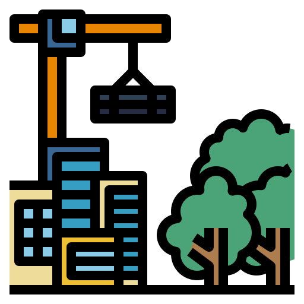

Peta Infrastruktur — MalukuInfraZone
BPBPK Maluku
Kembali
Sektor
Wilayah
Tahun
Jenis Kegiatan
Status Keberfungsian
Terapkan
Reset
Menunggu pemuatan peta...
Air Minum - Reguler
Air Minum - Berbasis Masyarakat
Sanitasi - Reguler
Sanitasi - Berbasis Masyarakat
Bina Penataan Bangunan

Pengembangan Kawasan Strategis
↑